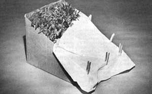
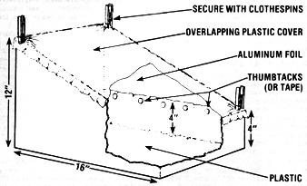

"Going solar" doesn't have to cost you an arm and a leg . . . nor does it necessarily mean a big investment of time and materials. In fact, you can complete the small-scale sun energy project pictured here in only a few minutes-using a handful of common household items-for as little as 15 cents. And, once the device is assembled, the efficient little window greenhouse can be employed to start early garden seedlings or to raise greens and radishes through the winter.
SUPPLIES AND CONSTRUCTION
The first step in constructing the cardboard conservatory is to gather the necessary materials . . . all of which can probably be found right in your own home. If you have a closet or attic full of empty cardboard boxes, choose one that measures about 12" X 12" X 16". (Folks who don't have a ready supply of containers on hand can usually pick up cartons-for free-at large supermarkets.)
Next, you'll need a 24" X 30" (11-gallon capacity) plastic garbage bag. For best results, the bag should be translucent white, and at least 1.75 mil thick. You'll also want to collect a few feet of aluminum foil, some strong glue, thumbtacks or tape, a few clothespins, and a generous quantity of garden earth or commercial potting soil.
To make the simple device, cut off the top of the box diagonally-see the diagram-but be sure to do so at an angle that will leave a 4" lip on the container's front. Then glue a length of aluminum foil (with its shiny side out) to the inner surfaces of the carton's three large sides, as shown in the drawing (this protective layer helps to insulate the greenhouse and to concentrate the solar heat on your seedlings). Next, spread the trash bag out flat and slit it open along the sides and the bottom, creating two rectangular pieces of about 24" X 30" each. Cover the bottom of the greenhouse with one of those plastic sheets, and fasten its edges securely-with tape or thumbtacks-about three or four inches up the inner sides of the box. The plastic layer provides further insulation, and prevents any water from leaking through the cardboard. (If you want to ensure doubly effective protection, you might decide to use a whole garbage bag . . . but doing so could boost the final cost of your sun-grabber by as much as another dime!)
Finally, pour in a three- to four-inch layer of soil or potting mixture, and plant the seeds. At this point, your indoor garden is almost finished . . . all it needs is a cover that will trap moisture and sunlight. Stretch the other 24" X 30" sheet of plastic (or a second bag, if you already used a whole one to line the inside) across the top of the carton-as the illustration shows-and secure it over the edges with clothespins or thumbtacks. (I think that clothespins are really the best choice for this purpose, since they won't rip the translucent fabric as thumbtacks might . . . and the wooden fasteners can also be removed easily when you want to check on the progress of your mini-garden.)
You can set the compact solar greenhouse in a chair, on a windowsill, or in any sunny location ... and watch it go to work! Whenever you want to water the vegetables, simply remove some clothespins and fold back the plastic. And when the seeds sprout, feed them a "tea" of manure, organic compost, or fish emulsion. Like its larger outdoor cousins, the little hothouse provides a warm, humid, and draft-free environment that tender seedlings are bound to thrive in. You'll find that most greens-such as kale and spinach-do well in the window greenhouse. (A crop of radishes is springing up in one of the boxes I made, and I've planted lettuce in another one.)
A SMALL INVESTMENT. . . AND A BIG PAYOFF
That's about it! For an initial outlay of only a few pennies, you can create an indoor hothouse that will keep your green thumb busy throughout the colder months . .. and maybe even provide some winter vegetables, too. Not only is it easy to construct, but the solar window greenhouse also boasts a materials cost that can't be beat: One plastic garbage bag should set you back no more than 10 cents, and you'll likely use about a nickel's worth of aluminum foil. Since you probably already have the other supplies on hand, the total expense per greenhouse (assuming that you mix your own potting soil) can be as little as 15 cents. At that price, you can afford to have one in every window of the house!
EDITOR'S NOTE: After you've built this little greenhouse, you might be hungry to try a larger-scale "sun room" project. If that's the case, read the article on page 80 of this issue.
|
 |
 |
|